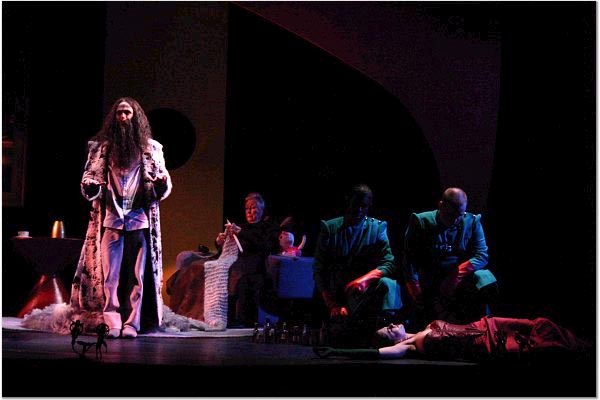
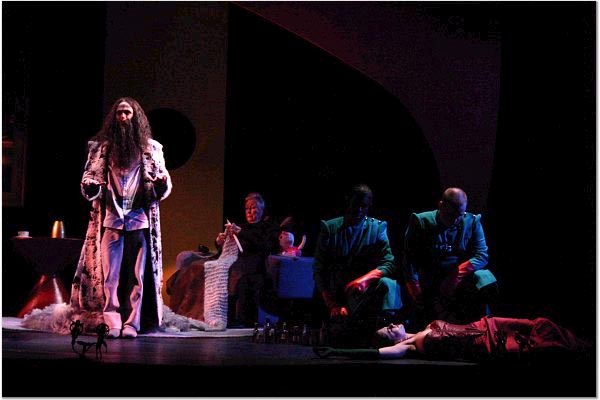

Tenor Brendan Daly has sung a wide range of roles across the US and internationally, specializing in Mozart, Italian bel canto, operetta, and contemporary works.
Brendan recently finished a residency in Cologne, Germany singing Tamino in the Magic Flute for Kammeroper Köln. During his time in Germany, he appeared in performances ranging from sacred works of Carissimi to scenes from Bernstein's West Side Story. He is a proud member of the winning cast of Don Pasquale, singing Ernesto in the prestigious 2017 Ring Award Competition in Graz, Austria.
In other recent bel canto adventures, Brendan had the great privilege to sing the demanding role of Argirio in Rossini's Tancredi, for the Lunenburg Academy of Music Performance in Nova Scotia. Brendan's appearance in Lunenburg, in one of the composer's grandest serious operas and under the direction of legendary Rossini expert Maestro Alberto Zedda, came about through his participation in the Accademia Rossiniana at the Rossini Opera Festival in Pesaro, Italy.
Noted for his acting and physicality, as well as for his vocal strength, Brendan has performed operettas of Gilbert and Sullivan, Offenbach, and Strauss--along with a number of English-language operas--to critical acclaim. While engaged at the Boston University Opera Institute in 2013, Brendan made his professional debut with Opera Saratoga, performing lead roles in Offenbach’s Le 66, Gilbert and Sullivan’s Trial by Jury, and William Schuman's baseball opera The Mighty Casey. He has toured Georgia with The Pirates of Penzance for Atlanta Opera and was lauded in the Denver press for his portrayal of Ivan, in Richard Wargo's comedy The Music Shop, for Opera Colorado. Brendan sang lead roles in English-language adaptations of Rossini's Cinderella and Gounod's Romeo and Juliet, also for Opera Colorado, and he has toured throughout New England with Boston Lyric Opera, as Count Almaviva in the Barber of Seville.
A young artist apprentice in previous seasons at Opera Colorado, Opera Theatre of St. Louis, Tanglewood, Aspen Opera Theater Center, Opera Saratoga, and Opera on the James, Brendan earned his BA in Romance Languages and Literatures and Music from Harvard, his Master’s from the Longy School of Music, and a Performance Diploma in Opera from the Boston University School of Fine Arts.
August 2017